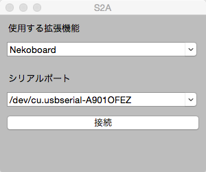

はじめに
S2Aは、Scratch2.0よりオープンハードウェアであるArduinoを簡単に操作するための拡張機能になります。Arduinoに接続したセンサーやモーターなどを制御する新しいブロックが使えるようになります。
コンテンツ
画面イメージ
Scratch2.0 オフラインエディタ
Arduinoブロック
Nekoboardブロック
Nekoboar+ブロック
S2A.app (S2A.exe)
S2A.app (S2A.exe) は、Scratch2.0 オフラインエディタとArduinoを繋げるソフトです。
使い方
S2A.zipをダウンロードして、解凍してください。- ArduinoとPCをUSBで繋いでください。
ArduinoCode/s2a/s2a.inoをArduino IDEを使って、Arduinoにアップロードしてください。
（nekoboardは、IDEのボードをArduino Duemilanoveに変更が必要です。）App/S2A-0.1-win32.msiをインストールしてください。（Windowsのみ）デスクトップ上にあるs2a (windows)あるいはApp/s2a.app (Mac)を起動してください。- arduinoに繋がっているシリアルポートを選択して、接続ボタンを押してください。
Scratch 2.0 オフラインエディタを起動した状態で、メニューにある"ファイル"をシフトキーを押しながらクリックシてください。そうすると、"Import experimental HTTP extension"が表示されます。- "Import experimental HTTP extension"をクリックし、
Extensions/s2a_base.jsonを読み込んでください。 - "More Blocks" タブに、S２Aブロックができているのが確認できます。
S2Aの詳細
サポート言語
- 日本語
- 英語
サポートしているArduinoの種類
なお、Arudinoのその他のボードは、テストしていませんが、Uno同様動作すると思います。
S2Aで操作できる内容
Arduino
- ６つのアナログ入力 (すべてのアナログピン)
- ２つのアナログ出力 (デジタルピン 5, 6)
- ３つのデジタル入力 (デジタルピン 2, 3, 4)
- ３つのデジタル出力 (デジタルピン 10, 11, 13)
- ３つのサーボ制御 (デジタルピン 7, 8, 12)
- １つのTone関数 (デジタルピン 9)
このうち、デジタル入力はすべてプルアップしています。
nekoboard
nekoboardに付いている各種センサーが使用できます。
- スライダー
- 明るさ(照度センサー)
- マイク
- ボタン
- LEDのON・OFF
nekoboard+
nekoboardのピンを拡張することで、Arduinoと同様のブロックが使用できます。
当然、nekoboardに付いている各種センサーも使用できます。
このうち、デジタル入力はすべてプルアップしています。
通信方法
S4A は、the Scratch HTTP Extensionで提供されている機能を活用しています。
リリースノート
- Ver0.1：S2Aの公開
- Ver0.2
- メニューバーの追加
- 言語選択（日本語、英語）に対応
- デスクトップショートカットの追加（Windows）
- アイコンの追加（Windows）
- インストーラの上書きに対応（Windows）
- Ver0.3
- 対応ボードにnekoboardを追加
- Arduinoの制御内容を変更
- ボードの選択に対応
S2Aの今後
独自で作成した関数を呼び出せるカスタムモードを追加したいと考えています。可能であれば、BlocklyDuinoとの連携もしていきます。